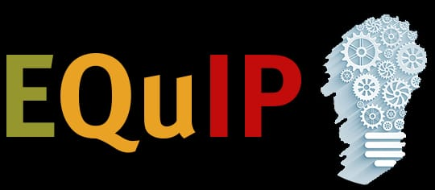
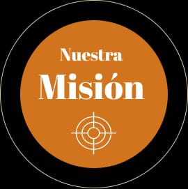

Somos un proyecto escolar dedicado a crear conciencia sobre la contaminación del Golfo de México y la importancia de proteger uno de los ecosistemas marinos más importantes del país. Nuestro objetivo es compartir información clara y confiable para que más personas conozcan las causas, consecuencias y posibles soluciones a este problema ambiental.
Creemos que el cuidado del medio ambiente comienza con la educación. Por ello, buscamos informar a estudiantes y visitantes sobre la importancia de reducir la contaminación, proteger la biodiversidad marina y fomentar hábitos responsables que beneficien al planeta.
Nuestro compromiso es inspirar a la sociedad a participar en acciones como el reciclaje, la limpieza de playas y la conservación de los recursos naturales, demostrando que el esfuerzo de cada persona puede contribuir a un Golfo de México más limpio y saludable.

Nuestra misión es promover la educación ambiental y motivar a las personas a participar en actividades que contribuyan a disminuir la contaminación del Golfo de México. Consideramos que la información es una herramienta fundamental para generar cambios positivos en la sociedad.
También buscamos fomentar valores como el respeto, la responsabilidad y el compromiso con la naturaleza, impulsando acciones sencillas como reducir el uso de plásticos, reciclar correctamente y cuidar las playas y los ecosistemas marinos.
Trabajamos para crear conciencia sobre la importancia de proteger la flora y la fauna del Golfo de México, apoyando iniciativas que favorezcan la conservación de este importante patrimonio natural.
Nuestra visión es contribuir a que el Golfo de México sea un ecosistema limpio, saludable y protegido, donde la biodiversidad marina pueda desarrollarse en equilibrio y las futuras generaciones disfruten de un ambiente libre de contaminación.
Aspiramos a que cada vez más personas comprendan que pequeñas acciones diarias pueden generar grandes cambios en la conservación del medio ambiente, fortaleciendo la participación ciudadana en campañas ecológicas y proyectos de protección ambiental.
Esperamos que este proyecto motive a estudiantes, familias y comunidades a convertirse en agentes de cambio, promoviendo el respeto por los océanos y el cuidado de los recursos naturales mediante acciones responsables y sostenibles.